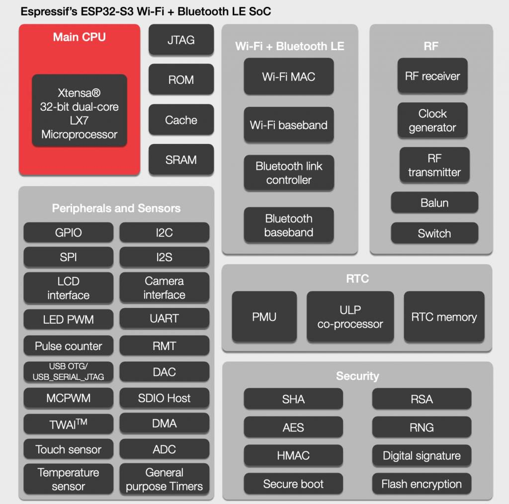

第六课：FreeRTOS 深入原理——让 XIAO ESP32S3 同时执行多个任务
前面我们已经学习了 CPU、寄存器、中断、时钟、内存以及 GPIO、I2C、SPI、UART 等驱动。
现在进入嵌入式系统开发的核心：实时操作系统（RTOS）。
本课主要解决一个问题：
假设你的 XIAO ESP32S3 需要同时完成以下工作：
- 按键检测
- LED 控制
- Wi-Fi 网络连接
- 传感器数据采集
- OLED 屏幕刷新
- 数据上传
- 系统状态监控
如何让这些功能相互独立，又能协调运行？
答案就是 FreeRTOS。
一、什么是 FreeRTOS？
FreeRTOS 是一个面向嵌入式设备的实时操作系统。
ESP-IDF 已经集成 FreeRTOS，不需要你单独安装。
它的核心作用是：
- 管理多个任务。
- 分配 CPU 执行时间。
- 管理任务优先级。
- 实现任务之间的通信。
- 协调多个任务访问共享资源。
- 提供定时器和同步机制。
可以把它理解为一位 CPU 调度管理员。
需要注意：多任务不等于所有任务真的同时执行。单个 CPU 核心在某一时刻通常执行一个任务，调度器通过切换任务实现并发；ESP32-S3 的两个核心则可以真正并行执行不同任务。
二、任务 Task 的工作原理
FreeRTOS 中最基本的单位就是 Task。
一个 Task 可以理解为一个独立的程序执行流程。
例如：
void led_task(void *arg)
{
while (1) {
// 控制 LED
vTaskDelay(pdMS_TO_TICKS(500));
}
}它与普通 C 函数有一个重要区别：
普通函数执行结束就返回，而一个长期运行的 FreeRTOS 任务通常会持续运行，直到被删除。
1. 创建任务
xTaskCreate(
led_task,
"led_task",
2048,
NULL,
5,
NULL
);每个参数的含义：
| 参数 | 含义 |
|---|---|
led_task | 任务函数 |
"led_task" | 任务名称 |
2048 | 任务栈大小，ESP-IDF 中单位为字节 |
NULL | 传给任务的参数 |
5 | 任务优先级 |
NULL | 不保存任务句柄 |
任务创建成功后，调度器会在合适的时候运行它。
2. 任务的五种状态
例如：
vTaskDelay(pdMS_TO_TICKS(1000));执行这一行后，当前任务会进入 Blocked 状态，等待 1 秒左右。
这段时间 CPU 可以执行其他 Ready 任务。
这就是多任务系统能够提高 CPU 利用率的原因。
三、任务优先级：CPU 应该先执行谁？
FreeRTOS 使用优先级决定任务的执行顺序。
通常情况下：
优先级高的 Ready 任务，会优先于优先级低的 Ready 任务执行。
例如：
| 任务 | 优先级 | 功能 |
|---|---|---|
| 按键任务 | 5 | 处理用户操作 |
| 传感器任务 | 4 | 采集传感器 |
| 网络任务 | 3 | 上传数据 |
| 显示任务 | 2 | 刷新 OLED |
| 状态监控 | 1 | 统计系统信息 |
注意，优先级数字越大，优先级越高。
1. 高优先级任务如何抢占低优先级任务？
假设：
- Task A 优先级为 3。
- Task B 优先级为 5。
Task A 正在执行时，如果 Task B 变成 Ready 状态，调度器通常会让 Task B 抢占 Task A。
当 Task B 阻塞或主动让出 CPU 后，Task A 才可能继续运行。
2. 时间片调度
如果两个任务：
- 优先级相同；
- 都处于 Ready 状态；
- 没有被其他因素限制；
FreeRTOS 可以通过时间片轮转让它们共享 CPU 时间。
例如：
3. 为什么不能把所有任务都设置为最高优先级？
假设显示任务、传感器任务、网络任务全部使用最高优先级。
如果其中某个任务一直不阻塞，也不主动让出 CPU，那么其他任务可能长期无法运行。
这可能造成：
- 按键响应延迟；
- Wi-Fi 处理受影响；
- 系统任务无法及时执行；
- 看门狗超时；
- 系统卡死。
因此，优先级设计应该根据任务的实时性要求决定，而不是越高越好。
四、Queue 队列：任务之间如何交换数据？
这是 FreeRTOS 最常用的通信机制之一。
假设：
一个任务负责读取温度，另一个任务负责显示温度。
它们不应该直接随意访问对方的局部变量。
可以使用 Queue。
1. 队列的工作原理
Queue 可以实现：
- 一个任务向另一个任务发送数据；
- 多个任务向一个任务发送数据；
- 任务等待数据到达；
- 数据按照队列规则进行传递。
2. 实际代码：温度采集与显示任务
首先定义队列：
#include "freertos/FreeRTOS.h"
#include "freertos/queue.h"
#include "freertos/task.h"
static QueueHandle_t temperature_queue;创建温度采集任务：
void sensor_task(void *arg)
{
float temperature = 25.0f;
while (1) {
// 这里暂时模拟传感器读数
temperature += 0.1f;
xQueueOverwrite(
temperature_queue,
&temperature
);
vTaskDelay(pdMS_TO_TICKS(1000));
}
}创建显示任务：
void display_task(void *arg)
{
float temperature;
while (1) {
if (xQueueReceive(
temperature_queue,
&temperature,
portMAX_DELAY
) == pdPASS) {
printf(
"Temperature: %.2f C\n",
temperature
);
}
}
}在 app_main() 中创建队列和任务：
void app_main(void)
{
temperature_queue = xQueueCreate(
1,
sizeof(float)
);
configASSERT(temperature_queue != NULL);
xTaskCreate(
sensor_task,
"sensor_task",
3072,
NULL,
4,
NULL
);
xTaskCreate(
display_task,
"display_task",
3072,
NULL,
3,
NULL
);
}这里有一个知识点：
xQueueOverwrite() 适用于长度为 1 的队列，它会覆盖旧数据，保留最新值。
这适合温度、湿度等只关心最新状态的数据。
如果你需要完整记录每一次采样，就应该使用普通队列，并设计队列满时的处理策略。
五、Semaphore 信号量：如何同步任务？
Semaphore 中文叫信号量。
它主要解决一个问题：
一个任务完成某件事情后，如何通知另一个任务？
例如：
- 按键发生中断；
- GPIO 检测到信号；
- 传感器完成采样；
- 某个外设完成数据传输。
1. 二值信号量
二值信号量只有两种状态：
- 可用；
- 不可用。
可以把它理解为一个通知开关。
2. 示例代码
创建信号量：
static SemaphoreHandle_t button_sem;
void app_main(void)
{
button_sem = xSemaphoreCreateBinary();
configASSERT(button_sem != NULL);
xTaskCreate(
button_task,
"button_task",
3072,
NULL,
5,
NULL
);
}任务等待信号量：
void button_task(void *arg)
{
while (1) {
if (xSemaphoreTake(
button_sem,
portMAX_DELAY
) == pdTRUE) {
printf("Button event!\n");
}
}
}在中断中释放信号量：
static void IRAM_ATTR button_isr(void *arg)
{
BaseType_t higher_priority_task_woken = pdFALSE;
xSemaphoreGiveFromISR(
button_sem,
&higher_priority_task_woken
);
if (higher_priority_task_woken) {
portYIELD_FROM_ISR();
}
}这里必须记住：
- 普通任务使用
xSemaphoreGive()。 - ISR 中使用
xSemaphoreGiveFromISR()。 - ISR 不能调用会阻塞的普通 FreeRTOS API。
二值信号量适合通知事件，但它不适合保存大量事件数据。如果需要记录每次按键事件，可以考虑队列或任务通知计数。
六、Mutex 互斥锁：防止多个任务同时操作同一个资源
现在假设你有两个任务：
- Task A 要向 OLED 写入数据。
- Task B 也要向 OLED 写入数据。
如果两个任务同时操作屏幕，可能出现显示内容混乱。
这就需要 Mutex。
1. Mutex 的工作原理
2. 代码示例
static SemaphoreHandle_t oled_mutex;
void app_main(void)
{
oled_mutex = xSemaphoreCreateMutex();
configASSERT(oled_mutex != NULL);
}任务访问屏幕：
void oled_update(void)
{
if (xSemaphoreTake(
oled_mutex,
pdMS_TO_TICKS(1000)
) == pdTRUE) {
// OLED 写入操作
xSemaphoreGive(oled_mutex);
}
}Mutex 与 Binary Semaphore 的区别：
| 比较 | Binary Semaphore | Mutex |
|---|---|---|
| 主要用途 | 事件通知、同步 | 保护共享资源 |
| 所有权 | 没有任务所有权 | 有持有者 |
| 优先级继承 | 不提供 | 支持 |
| ISR 中释放 | 可以使用专用 API | 不允许 |
| 典型应用 | 中断通知 | I2C 总线共享 |
Mutex 必须由获得锁的任务释放。
不要在持有 Mutex 时执行很长时间的阻塞操作，否则其他任务可能长期等待。
七、Event Group 事件组：多个条件如何协调？
在实际产品中，经常会出现多个条件必须同时满足才能执行某个功能的情况。
例如：
设备只有在以下条件全部满足后，才允许开始工作：
- Wi-Fi 已连接；
- 传感器初始化成功；
- 配置文件已经加载；
- 用户完成设备启动确认。
这时可以使用 Event Group。
1. 工作原理
Event Group 使用多个 bit 表示不同事件。
例如：
| Bit | 含义 |
|---|---|
| Bit 0 | Wi-Fi 已连接 |
| Bit 1 | 传感器初始化完成 |
| Bit 2 | 配置加载完成 |
| Bit 3 | 用户确认启动 |
2. 示例代码
创建事件组：
static EventGroupHandle_t system_events;
#define WIFI_READY_BIT BIT0
#define SENSOR_READY_BIT BIT1
#define CONFIG_READY_BIT BIT2
#define USER_READY_BIT BIT3
void app_main(void)
{
system_events = xEventGroupCreate();
configASSERT(system_events != NULL);
}各个任务设置事件：
// Wi-Fi 连接成功
xEventGroupSetBits(
system_events,
WIFI_READY_BIT
);
// 传感器初始化完成
xEventGroupSetBits(
system_events,
SENSOR_READY_BIT
);
// 配置读取完成
xEventGroupSetBits(
system_events,
CONFIG_READY_BIT
);等待所有条件：
EventBits_t bits = xEventGroupWaitBits(
system_events,
WIFI_READY_BIT |
SENSOR_READY_BIT |
CONFIG_READY_BIT |
USER_READY_BIT,
pdFALSE,
pdTRUE,
portMAX_DELAY
);其中 pdTRUE 表示需要等待所有指定事件，而不是只等待其中一个。
Event Group 特别适合系统初始化、联网状态管理和多个任务之间的条件同步。
八、Software Timer：软件定时器
前面我们学习了 GPTimer，它是硬件定时器。
FreeRTOS 还提供软件定时器。
两者的区别：
| 比较 | GPTimer | FreeRTOS Software Timer |
|---|---|---|
| 实现 | 硬件定时器 | 定时器服务任务 |
| 精度 | 取决于硬件时钟 | 受调度影响 |
| 用途 | 精确计时、周期采样 | 周期业务、状态检查 |
| 回调执行环境 | 中断上下文 | Timer Service Task |
1. 软件定时器示例
#include "freertos/FreeRTOS.h"
#include "freertos/timers.h"
static TimerHandle_t status_timer;
static void status_timer_callback(TimerHandle_t timer)
{
printf("System status check\n");
}
void app_main(void)
{
status_timer = xTimerCreate(
"status_timer",
pdMS_TO_TICKS(1000),
pdTRUE,
NULL,
status_timer_callback
);
configASSERT(status_timer != NULL);
xTimerStart(status_timer, 0);
}这里：
1000ms是定时周期；pdTRUE表示周期性定时器；status_timer_callback是超时回调。
要注意，软件定时器回调运行在 Timer Service Task 中，不应该执行耗时操作、长时间阻塞或等待其他任务。它更适合发通知、更新状态和安排后续工作。
九、ESP32-S3 双核调度原理
这是 XIAO ESP32S3 与很多单核微控制器的重要区别。
ESP32-S3 有两个 Xtensa LX7 CPU 核心。
ESP-IDF 的 FreeRTOS 支持双核 SMP 调度。
SMP 是 Symmetric Multiprocessing，即对称多处理。
1. 双核如何运行？
假设你有四个任务：
| 任务 | 功能 |
|---|---|
| Task A | 按键检测 |
| Task B | 传感器采集 |
| Task C | Wi-Fi 业务 |
| Task D | 数据处理 |
两个核心可以分别运行不同任务：
Task A按键检测
Task C应用网络处理
Task B传感器采集
Task D数据处理
2. 如何指定任务运行在哪个核心？
ESP-IDF 提供：
xTaskCreatePinnedToCore()示例：
void sensor_task(void *arg)
{
while (1) {
printf("Sensor task\n");
vTaskDelay(pdMS_TO_TICKS(1000));
}
}
void display_task(void *arg)
{
while (1) {
printf("Display task\n");
vTaskDelay(pdMS_TO_TICKS(500));
}
}
void app_main(void)
{
xTaskCreatePinnedToCore(
sensor_task,
"sensor_task",
3072,
NULL,
4,
NULL,
1
);
xTaskCreatePinnedToCore(
display_task,
"display_task",
3072,
NULL,
3,
NULL,
0
);
}最后一个参数：
0：固定在 Core 0。1：固定在 Core 1。tskNO_AFFINITY：不固定核心，允许调度器安排。
重要：双核不等于速度自动翻倍。
如果两个任务共享同一 I2C 总线、同一个全局变量或者同一个屏幕，就需要同步机制。
另外，盲目指定核心可能降低系统效率。正式项目应先分析任务执行时间、阻塞时间、优先级和系统任务分布，再决定是否固定核心。
十、任务通知：轻量级任务通信
除了 Queue 和 Semaphore，FreeRTOS 还有一个非常实用的功能：
Task Notification。
它可以让一个任务直接向另一个任务发送通知。
例如：
- GPIO 中断通知按键任务；
- DMA 完成通知数据处理任务；
- 网络任务通知应用任务；
- 传感器采集任务通知显示任务。
1. 示例
任务句柄：
static TaskHandle_t sensor_task_handle;任务创建：
xTaskCreate(
sensor_task,
"sensor_task",
3072,
NULL,
4,
&sensor_task_handle
);发送通知：
xTaskNotifyGive(sensor_task_handle);接收通知：
ulTaskNotifyTake(
pdTRUE,
portMAX_DELAY
);和 Queue 相比，Task Notification 的开销通常更低，但它不能直接替代需要保存多条数据的队列。
可以这样记忆：
| 机制 | 最适合的场景 |
|---|---|
| Queue | 传递一组数据 |
| Binary Semaphore | 事件同步 |
| Mutex | 保护共享资源 |
| Event Group | 等待多个条件 |
| Software Timer | 周期性触发业务 |
| Task Notification | 轻量任务通知 |
十一、完整实战：建立一个 XIAO ESP32S3 多任务系统
现在把上面的知识整合起来。
我们建立一个小型设备，具有三个任务：
- LED 任务：控制板载 LED。
- 按键任务：等待用户事件。
- 状态任务：每隔 5 秒输出系统状态。
这里使用 FreeRTOS 任务通知模拟按键事件，后续可以将它连接到真正的 GPIO 中断。
工程结构
freertos_demo/
├── CMakeLists.txt
├── main/
│ ├── CMakeLists.txt
│ └── main.c
└── sdkconfig完整示例代码
#include <stdio.h>
#include "freertos/FreeRTOS.h"
#include "freertos/task.h"
#include "driver/gpio.h"
#include "esp_log.h"
#define LED_GPIO GPIO_NUM_21
static const char *TAG = "XIAO_RTOS";
static TaskHandle_t led_task_handle;
static volatile bool led_state = false;
// LED 任务
static void led_task(void *arg)
{
gpio_set_level(LED_GPIO, 1);
while (1) {
// 等待按键任务发来的通知
ulTaskNotifyTake(
pdTRUE,
portMAX_DELAY
);
led_state = !led_state;
// XIAO 板载 LED 低电平点亮
gpio_set_level(
LED_GPIO,
led_state ? 0 : 1
);
ESP_LOGI(TAG, "LED state: %s",
led_state ? "ON" : "OFF");
}
}
// 模拟按键任务
static void button_task(void *arg)
{
while (1) {
// 模拟按键，每隔 3 秒触发
vTaskDelay(pdMS_TO_TICKS(3000));
xTaskNotifyGive(led_task_handle);
}
}
// 系统状态任务
static void status_task(void *arg)
{
while (1) {
ESP_LOGI(TAG, "System running");
ESP_LOGI(TAG,
"Free heap: %u",
(unsigned)esp_get_free_heap_size()
);
vTaskDelay(pdMS_TO_TICKS(5000));
}
}
void app_main(void)
{
gpio_config_t config = {
.pin_bit_mask = 1ULL << LED_GPIO,
.mode = GPIO_MODE_OUTPUT,
.pull_up_en = GPIO_PULLUP_DISABLE,
.pull_down_en = GPIO_PULLDOWN_DISABLE,
.intr_type = GPIO_INTR_DISABLE
};
ESP_ERROR_CHECK(gpio_config(&config));
xTaskCreate(
led_task,
"led_task",
3072,
NULL,
4,
&led_task_handle
);
xTaskCreate(
button_task,
"button_task",
3072,
NULL,
3,
NULL
);
xTaskCreate(
status_task,
"status_task",
3072,
NULL,
2,
NULL
);
ESP_LOGI(TAG, "FreeRTOS system started");
}这里使用的 led_state 只由 LED 任务修改，因此不需要用 Mutex 保护。示例中的按键是软件模拟的，不能把它误认为已经完成真实按键输入。
运行结果预期
I (1000) XIAO_RTOS: System running
I (3000) XIAO_RTOS: LED state: ON
I (5000) XIAO_RTOS: System running
I (6000) XIAO_RTOS: LED state: OFF
I (9000) XIAO_RTOS: LED state: ON这段程序虽然功能简单，但已经包含了一个嵌入式系统的基本架构：
- 独立任务；
- 任务优先级；
- 任务通知；
- GPIO 驱动；
- 系统状态监控。
十二、FreeRTOS 实际开发中必须注意的五个问题
1. 任务栈溢出
每个任务都有自己的栈空间。
如果任务中存在大型数组、深层函数调用或递归，可能造成栈溢出。
建议使用：
uxTaskGetStackHighWaterMark(NULL);持续观察任务的历史最低剩余栈空间。
2. 优先级反转
假设：
- 低优先级任务持有 Mutex；
- 高优先级任务等待 Mutex；
- 中优先级任务不断执行。
高优先级任务可能被中优先级任务间接拖延。
FreeRTOS Mutex 支持优先级继承机制，可以缓解这种问题。
3. 死锁
两个任务互相等待对方释放资源，就可能形成死锁。
例如：
Task A 持有 Lock 1，等待 Lock 2
Task B 持有 Lock 2，等待 Lock 1解决方法：
- 统一锁的获取顺序；
- 避免嵌套加锁；
- 设置合理的超时时间；
- 不要长时间持有锁。
4. ISR 中不能执行阻塞操作
中断处理程序应尽可能短。
正确方式：
硬件中断
↓
ISR 记录事件
↓
通知 FreeRTOS 任务
↓
任务执行复杂操作不要在 ISR 中进行网络请求、打印大量日志或等待外设。
5. 多核共享数据问题
如果 Core 0 和 Core 1 同时访问同一个全局变量，就可能出现竞态条件。
例如：
static int counter = 0;两个核心同时执行：
counter++;这并不保证安全，因为自增通常不是一个不可分割的操作。
需要根据场景使用：
- Mutex；
- 临界区；
- 原子操作；
- Queue；
- Task Notification。
十三、如何调试 FreeRTOS 系统？
建议掌握以下四种方法。
| 工具或接口 | 用途 |
|---|---|
uxTaskGetSystemState() | 获取任务状态 |
uxTaskGetStackHighWaterMark() | 检查任务栈 |
uxTaskGetNumberOfTasks() | 统计任务数量 |
vTaskGetRunTimeStats() | 统计任务 CPU 运行时间 |
例如查看任务数量：
printf(
"Task count: %u\n",
(unsigned)uxTaskGetNumberOfTasks()
);查看当前任务栈：
printf(
"Stack remaining: %u bytes\n",
(unsigned)uxTaskGetStackHighWaterMark(NULL)
);任务运行时间统计需要启用相应的 FreeRTOS 配置，并配置运行时间统计时钟源。
此外，还可以使用 ESP-IDF 的 OpenOCD/GDB 调试工具分析任务堆栈和异常。
官方文档：
ESP-IDF FreeRTOS 实现说明FreeRTOS API 参考
十四、建立 XIAO ESP32S3 的标准任务架构
以后开发复杂固件，不建议把所有功能都写在 app_main() 里。
可以采用以下结构：
XIAO_ESP32S3_Firmware/
│
├── main/
│ └── app_main.c
│
├── components/
│ ├── xiao_bsp/
│ │
│ ├── task_manager/
│ │ ├── task_button.c
│ │ ├── task_sensor.c
│ │ ├── task_display.c
│ │ ├── task_network.c
│ │ └── task_monitor.c
│ │
│ ├── communication/
│ │ ├── queue_manager.c
│ │ ├── event_manager.c
│ │ └── mutex_manager.c
│ │
│ └── drivers/
│ ├── gpio/
│ ├── i2c/
│ ├── spi/
│ └── uart/
│
├── docs/
│ ├── task_architecture.md
│ ├── memory_usage.md
│ └── system_design.md
│
└── sdkconfig这样 Codex 可以分别开发和测试每个任务，减少不同功能之间的耦合。
十五、本课实验验收
十六、下一课：Wi-Fi、BLE 和网络通信原理
学到这里，你已经掌握了：
- CPU 与内存；
- 中断与时钟；
- GPIO 和外设驱动；
- FreeRTOS 多任务；
- 队列、信号量和 Mutex；
- 双核任务调度。
下一步就是让 XIAO ESP32S3 真正连接外部世界。
第七课：ESP32-S3 网络通信系统

- Wi-Fi 射频和无线通信原理。
- STA、AP 和 AP+STA 模式。
- TCP、UDP、HTTP、MQTT。
- BLE 广播、扫描、GATT 服务和特征。
- Wi-Fi 与 BLE 共存机制。
- ESP-IDF 网络事件系统。
- FreeRTOS 网络任务架构。
- OTA 固件远程升级。
- XIAO ESP32S3 连接局域网和云端。
下一阶段的目标： 让 XIAO ESP32S3 从一个能够控制 GPIO 的单片机，逐步变成一个可以联网、通信、远程控制和独立运行的智能设备。
我建议继续按照这个顺序学习，不急于直接做大型应用。这样以后让 Codex 编写完整固件时，你就能够判断它生成的任务架构、驱动和通信逻辑是否合理。